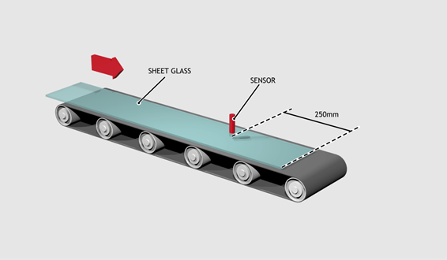
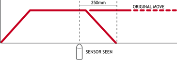
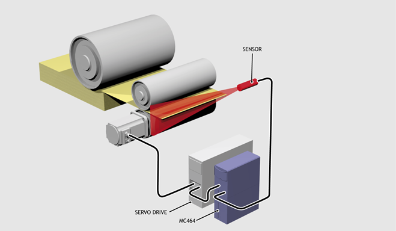
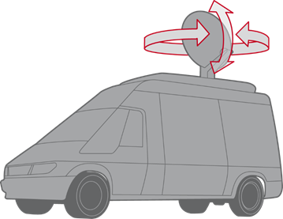

Axis Command
MOVEMODIFY(position[, position[, ...]])
MM()
MOVEMODIFY will change the absolute end position of a linear move immediately ahead of it, either the currently active move if the move buffer is empty, or the last move loaded into the move buffer. If there is neither a motion command active nor one in the move buffer, or the last move loaded is not a linear move, then a MOVEMODIFY move is loaded.
A linear move type is one of MOVE , MOVEABS , MOVESP or MOVEABSSP .
If there are multiple linear moves in the move buffer, then MOVEMODIFY will only modify the last move loaded.
If the change in end position requires a change in direction, then CANCEL is issued.
|
position: |
Absolute position for the move to complete at. |
A sheet of glass is fed on a conveyor and is required to be stopped 250 mm after the leading edge is sensed by a proximity switch. The proximity switch is connected to the registration input:

MOVE(10000) 'Start a long move on conveyor
REGIST(3) 'Set up registration
WAIT UNTIL MARK 'MARK goes TRUE when sensor detects glass edge
OFFPOS = -REG_POS 'Set position where mark was seen to 0
WAIT UNTIL OFFPOS = 0 'Wait for OFFPOS to take effect
MOVEMODIFY(250) 'Change move to stop at 250mm

A paper feed system slips, so to counteract this, a proximity sensor is positioned one third of the way into the movement that detects at which position the paper passes and so how much slip has occurred. The move is then modified to account for this variation.

paper_length = 4000
DEFPOS(0)
REGIST(3)
MOVE(paper_length)
WAIT UNTIL MARK
slip = REG_POS - (paper_length / 3)
offset = slip * 3
MOVEMODIFY(paper_length + offset)
A satellite receiver sits on top of a van; it must align correctly to the satellite from data processed in a computer. This information is sent to the controller through the serial link and sets VR indices 0 and 1. This information is used to control the two axes. MOVEMODIFY is used so that the position can be continuously changed even if the previous set position has not been achieved.

bearing = 0 'Set labels for VRs
elevation = 1
UNITS AXIS(0) = 360 / counts_per_rev0
UNITS AXIS(1) = 360 / counts_per_rev1
WHILE IN(2) = ON
MOVEMODIFY(VR(bearing)) AXIS(0) 'Adjust axis 0 to bearing in VR(0)
MOVEMODIFY(VR(elevation)) AXIS(1) 'Adjust axis 1 to elevation in VR(1)
WA(250)
WEND
RAPIDSTOP 'Stop movement
WAIT IDLE AXIS(0)
MOVEABS(0) AXIS(0) 'Return to transport position
WAIT IDLE AXIS(1)
MOVEABS(0) AXIS(1)